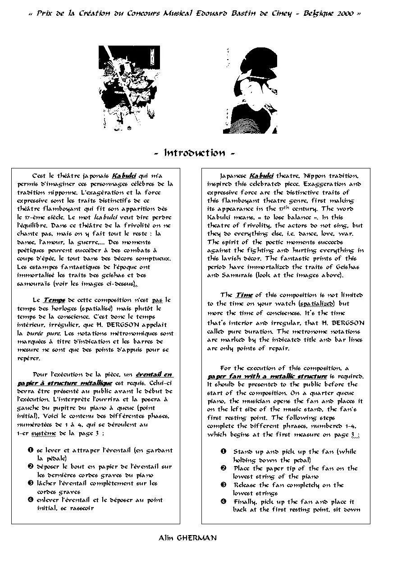

A celebration of Kabuki theatre
Japanese Kabuki theatre, Nippon tradition, inspired this celebrated modern piece. Exaggeration and expressive force are the distinctive traits of this flamboyant theatre genre, first making its appearance in the 17th century.
The word Kabuki means « to lose balance ». In this theatre of frivolity, the actors do not sing, but they do everything else — dance, love, war. The spirit of the poetic moments succeeds against the fighting and hurting everything in this lavish décor.
Premiered in concert by Alin Gherman at the Royal Conservatory of Music of Brussels, 31 March 2001.
Un hommage au théâtre Kabuki
Le théâtre japonais Kabuki, tradition nippone, a inspiré cette pièce moderne célébrée. L’exagération et la force expressive sont les traits distinctifs de ce genre théâtral flamboyant, apparu pour la première fois au XVIIe siècle.
Le mot Kabuki signifie « perdre l’équilibre ». Dans ce théâtre de la frivolité, les acteurs ne chantent pas, mais ils font tout le reste — la danse, l’amour, la guerre. L’esprit des moments poétiques triomphe contre les combats et blesse tout dans ce décor somptueux.
Créé en concert par Alin Gherman au Conservatoire royal de Musique de Bruxelles, le 31 mars 2001.
Full score (11 pages) available by e-mail — S.A.B.A.M. protected.